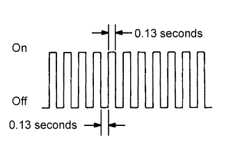

СИСТЕМА ECD > ПРОВЕДЕНИЕ АКТИВНОЙ ДИАГНОСТИКИ |
| CHECK MODE PROCEDURE |
Make sure that the following conditions are met:
Battery voltage is 11 V or more.
Shift lever is in N.
A/C switch is off.
Turn the ignition switch off (if ON).
Connect the intelligent tester to the DLC3.
Turn the ignition switch to ON and turn the tester on.
Enter the following menus: Powertrain / Engine and ECT / Check Mode.
|  |
Make sure the MIL flashes as shown in the illustration.
Start the engine (the MIL should turn off).
Simulate the conditions of the malfunction described by the customer.
Check the DTC and freeze frame data using the intelligent tester.
After confirming the DTCs, inspect the appropriate circuits (See page Нажмите здесь).